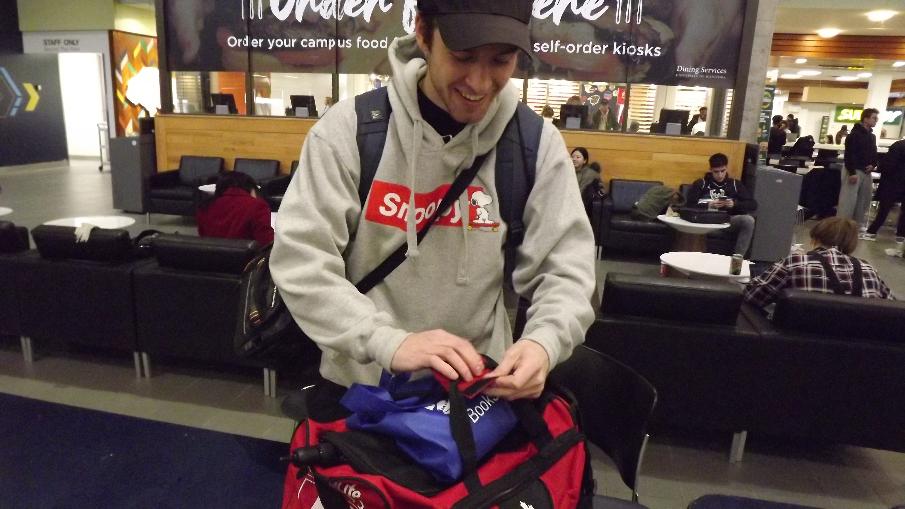

About the brand
My name is Zachary Kolton, and I founded Birds Hill Burdock (BHB)
Why it started
In early 2023, while talking with my brother in his bedroom, I noticed he attached a strip of adhesive Velcro his tv remote.
Until this point, my familiarity with this material did not extend passed it's uses for clothing and bags handles, so seeing this on a tv remote was strange.
Why did you do that? I asked.
and he replies... It's so I don't forget where it is
Now while I did not have the same issue of forgetting where my tv remote was, there was an item that I forgot religiously...
my mother fucking airpod case
How it Started
I started this brand in Feburary 2024 after inventing/idealizing a new type of Apple Airpods' case in June 2023. The very first version was just an airpods case with a hook-and-loop dot on the face. While it technically "worked", it was by no means a sellable idea.
However, this brought about an entirely new chain of thought: what if I just incorporate hook-and-loop material into everyday items.